iNKT presentation materialsiNKT 论文式汇报资料包 · 2026-09-20
独立源图面板 + 原生可编辑标题、说明和表格。这里的预览仅供找图，不会作为整页图片插入PPT。
前28页为主线，其余为附录。所有图表保留原统计量、比较范围和解释限制。源页预览保留原页码，整合文件另用连续页码。
编辑PPT后请在PowerPoint中导出PDF，使修改同步。包内PDF来自同一绘图源布局，未宣称经过Office排版渲染。
01. iNKT: cell states, cytotoxic programs and functional changes
Main talk · source custom_01 · 0 independent panels · 0 native tables
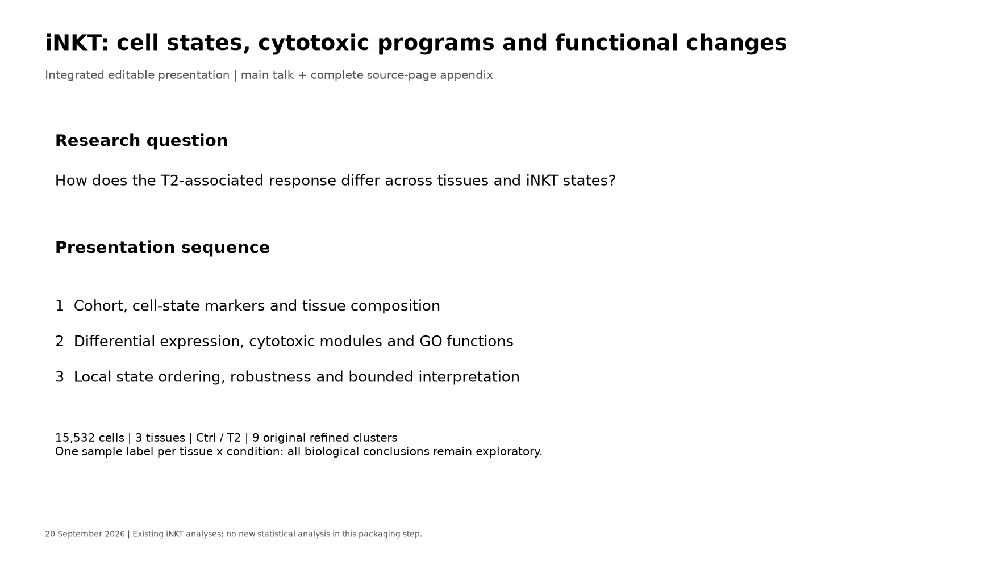
Blood Fig. 3; PAGER-scFGA Fig. 5; Borra et al. Fig. 4c
主报告按数据与细胞状态、差异与功能、轨迹与解释组织。原37页和新增19页均保留，部分进入主报告，其余进入附录。
Copy-ready source panels
- Text/table slide: edit directly in PPTX.
Numeric source tables
- See notes/numeric_source_mapping.json and original source reference.
02. Material, dataset and QC
Main talk · source old_02 · 3 independent panels · 1 native tables
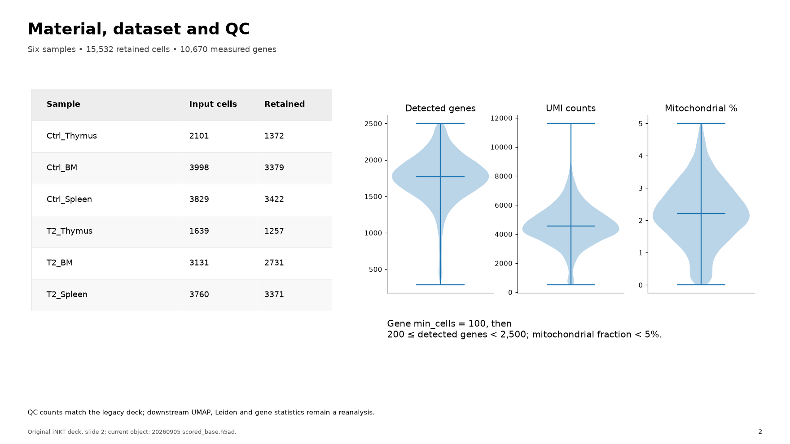
Original iNKT deck, slide 2; current object: 20260905 scored_base.h5ad.
原综合报告第2页。QC counts match the legacy deck; downstream UMAP, Leiden and gene statistics remain a reanalysis.
Copy-ready source panels
Numeric source tables
03. Clusters and tissue composition
Main talk · source old_03 · 3 independent panels · 0 native tables
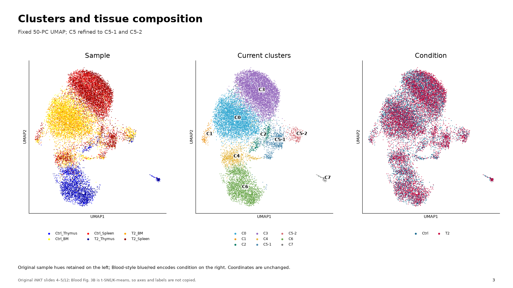
Original iNKT slides 4–5/12; Blood Fig. 3B is t-SNE/K-means, so axes and labels are not copied.
原综合报告第3页。Original sample hues retained on the left; Blood-style blue/red encodes condition on the right. Coordinates are unchanged.
Copy-ready source panels
Numeric source tables
- See notes/numeric_source_mapping.json and original source reference.
04. iNKT1 marker program
Main talk · source old_05 · 11 independent panels · 0 native tables
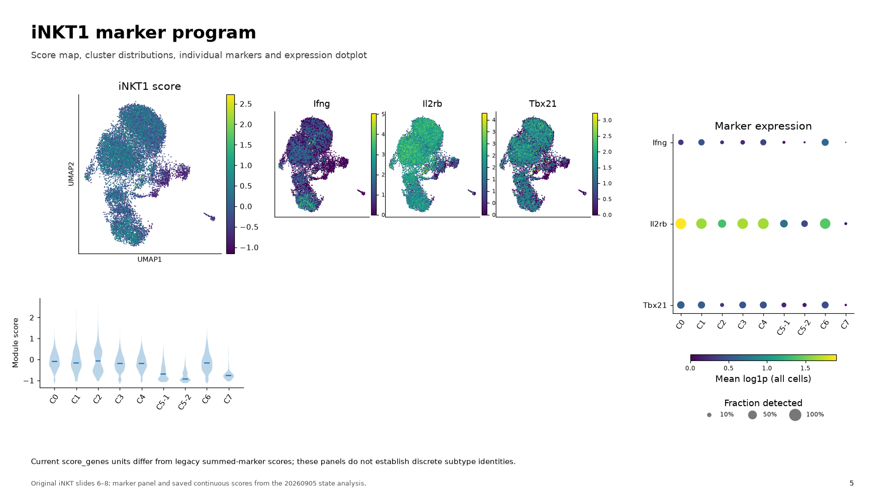
Original iNKT slides 6–8; marker panel and saved continuous scores from the 20260905 state analysis.
原综合报告第5页。Current score_genes units differ from legacy summed-marker scores; these panels do not establish discrete subtype identities.
Copy-ready source panels
Numeric source tables
05. iNKT2 marker program
Main talk · source old_06 · 15 independent panels · 0 native tables
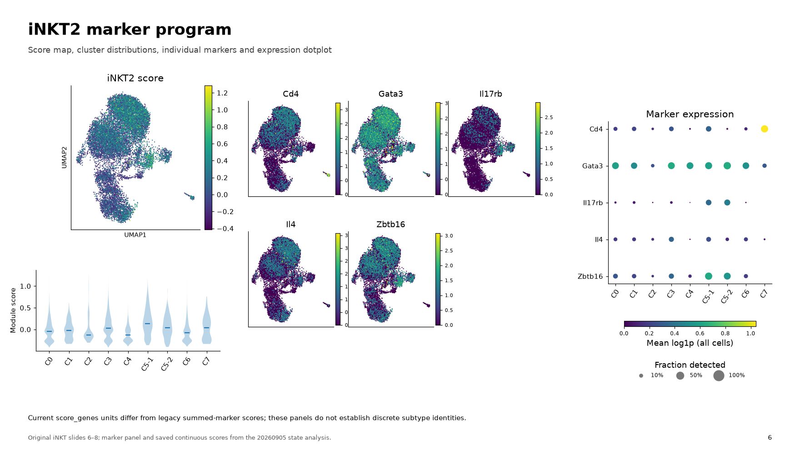
Original iNKT slides 6–8; marker panel and saved continuous scores from the 20260905 state analysis.
原综合报告第6页。Current score_genes units differ from legacy summed-marker scores; these panels do not establish discrete subtype identities.
Copy-ready source panels
Numeric source tables
06. iNKT17 marker program
Main talk · source old_07 · 11 independent panels · 0 native tables
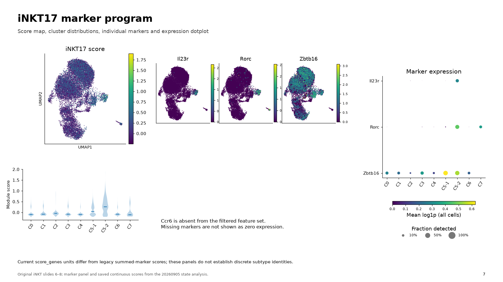
Original iNKT slides 6–8; marker panel and saved continuous scores from the 20260905 state analysis.
原综合报告第7页。Current score_genes units differ from legacy summed-marker scores; these panels do not establish discrete subtype identities.
Copy-ready source panels
Numeric source tables
07. Bone marrow: cluster and condition frequencies
Main talk · source old_08 · 2 independent panels · 0 native tables
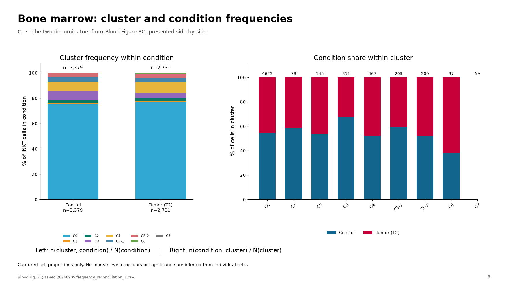
Blood Fig. 3C; saved 20260905 frequency_reconciliation_1.csv.
原综合报告第8页。Captured-cell proportions only. No mouse-level error bars or significance are inferred from individual cells.
Copy-ready source panels
Numeric source tables
08. Spleen: cluster and condition frequencies
Main talk · source old_09 · 2 independent panels · 0 native tables
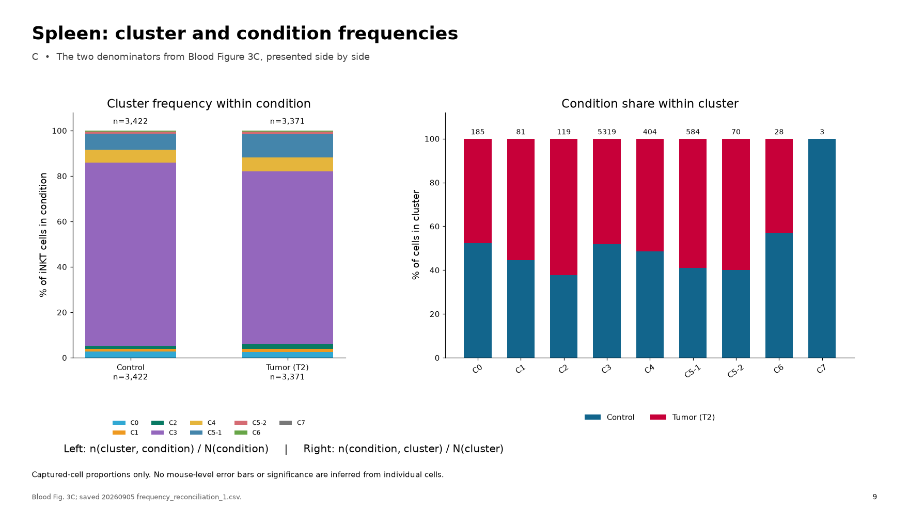
Blood Fig. 3C; saved 20260905 frequency_reconciliation_1.csv.
原综合报告第9页。Captured-cell proportions only. No mouse-level error bars or significance are inferred from individual cells.
Copy-ready source panels
Numeric source tables
09. Thymus: cluster and condition frequencies
Main talk · source old_10 · 2 independent panels · 0 native tables
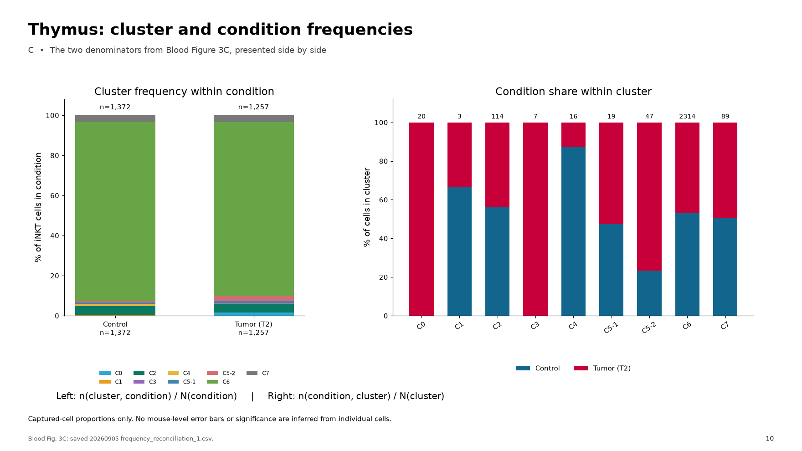
Blood Fig. 3C; saved 20260905 frequency_reconciliation_1.csv.
原综合报告第10页。Captured-cell proportions only. No mouse-level error bars or significance are inferred from individual cells.
Copy-ready source panels
Numeric source tables
10. D Differential expression: Control vs. Tumor
Main talk · source old_22 · 4 independent panels · 0 native tables
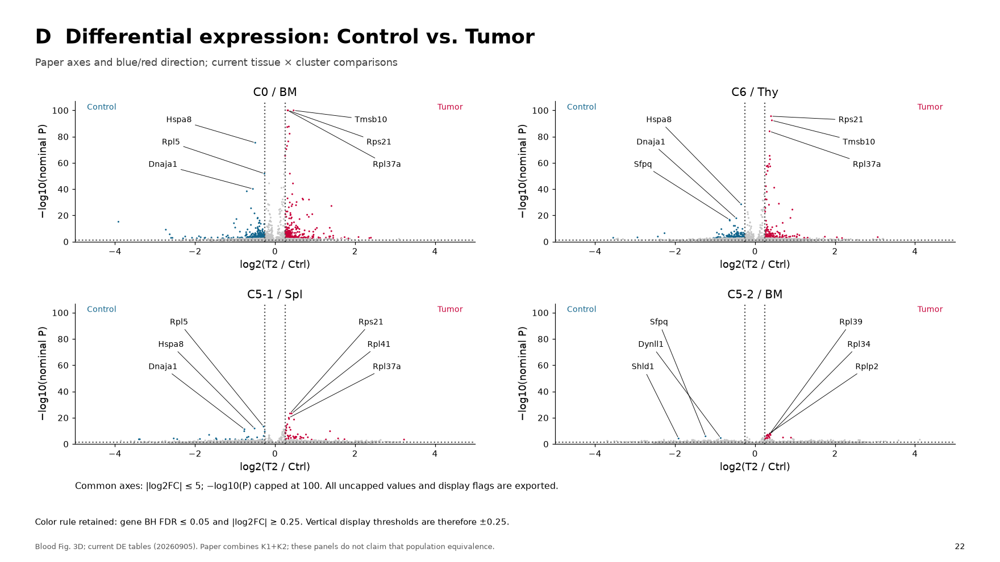
Blood Fig. 3D; current DE tables (20260905). Paper combines K1+K2; these panels do not claim that population equivalence.
原综合报告第22页。Color rule retained: gene BH FDR ≤ 0.05 and |log2FC| ≥ 0.25. Vertical display thresholds are therefore ±0.25.
Copy-ready source panels
Numeric source tables
11. Analysis design and reference mapping
Main talk · source new_02 · 0 independent panels · 1 native tables
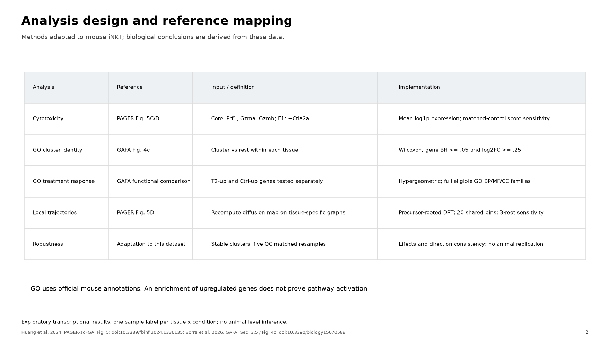
Huang et al. 2024, PAGER-scFGA, Fig. 5; doi:10.3389/fbinf.2024.1336135; Borra et al. 2026, GAFA, Sec. 3.5 / Fig. 4c; doi:10.3390/biology15070588
采用论文中的方法和图形组织方式。没有运行SCORPION、随机森林或声称重现PAGER专有网络；GO采用官方MGI小鼠注释。
Copy-ready source panels
- Text/table slide: edit directly in PPTX.
Numeric source tables
12. Cytotoxic gene coverage and scoring
Main talk · source new_03 · 3 independent panels · 0 native tables
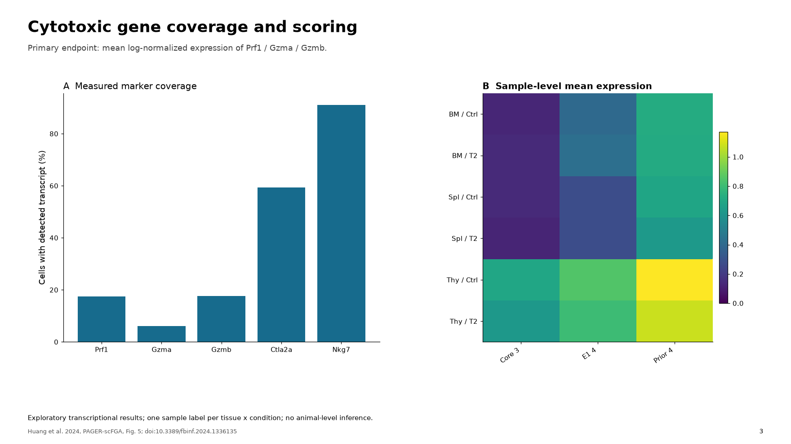
Huang et al. 2024, PAGER-scFGA, Fig. 5; doi:10.3389/fbinf.2024.1336135
分数是转录表达而不是杀伤实验读数。不同基因集的绝对分数不可视为相同量纲的功能强弱。
Copy-ready source panels
Numeric source tables
13. Bone marrow: cytotoxic expression and condition effects
Main talk · source new_04 · 5 independent panels · 0 native tables
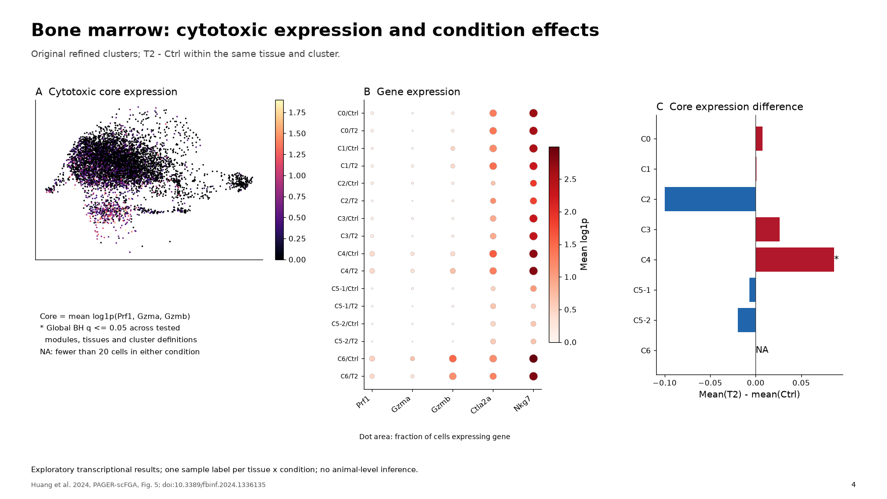
Huang et al. 2024, PAGER-scFGA, Fig. 5; doi:10.3389/fbinf.2024.1336135
按组织和原分群展示细胞毒性；红色为T2高，蓝色为Ctrl高。星号是细胞层面探索性检验，不能代表动物重复验证。
Copy-ready source panels
Numeric source tables
14. Spleen: cytotoxic expression and condition effects
Main talk · source new_05 · 5 independent panels · 0 native tables
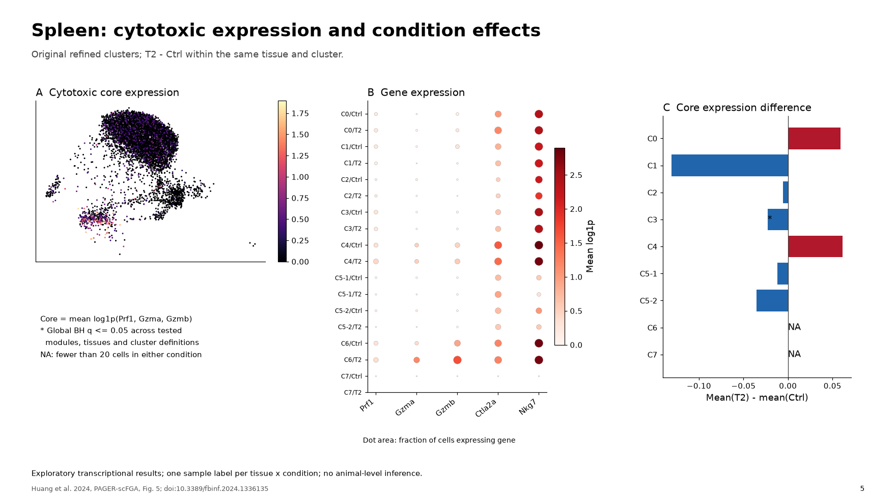
Huang et al. 2024, PAGER-scFGA, Fig. 5; doi:10.3389/fbinf.2024.1336135
按组织和原分群展示细胞毒性；红色为T2高，蓝色为Ctrl高。星号是细胞层面探索性检验，不能代表动物重复验证。
Copy-ready source panels
Numeric source tables
15. Thymus: cytotoxic expression and condition effects
Main talk · source new_06 · 5 independent panels · 0 native tables
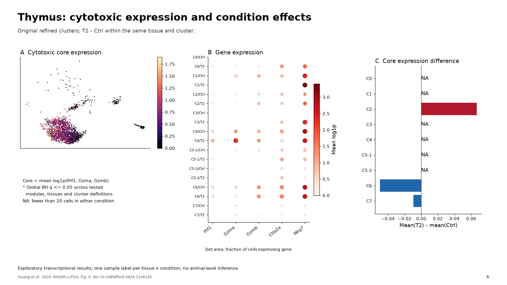
Huang et al. 2024, PAGER-scFGA, Fig. 5; doi:10.3389/fbinf.2024.1336135
按组织和原分群展示细胞毒性；红色为T2高，蓝色为Ctrl高。星号是细胞层面探索性检验，不能代表动物重复验证。
Copy-ready source panels
Numeric source tables
16. Bone marrow: GO biological processes: cluster identity
Main talk · source new_07 · 2 independent panels · 0 native tables
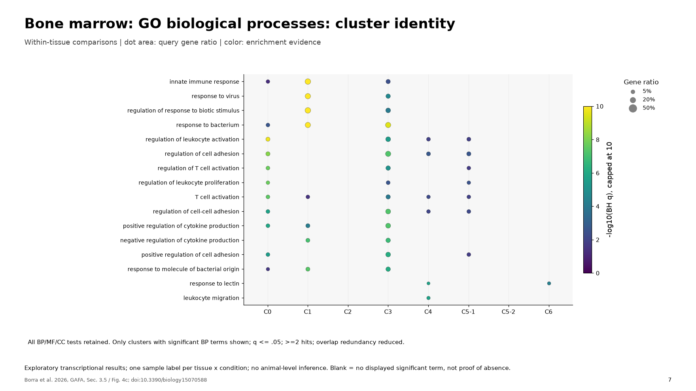
Borra et al. 2026, GAFA, Sec. 3.5 / Fig. 4c; doi:10.3390/biology15070588
GO气泡图只展示显著且至少两个命中基因的代表条目。T2/ Ctrl列分别表示该方向上调基因的富集，不把富集直接解释成通路激活。完整BP、MF、CC结果见数据表。
Copy-ready source panels
Numeric source tables
17. Spleen: GO biological processes: cluster identity
Main talk · source new_08 · 2 independent panels · 0 native tables
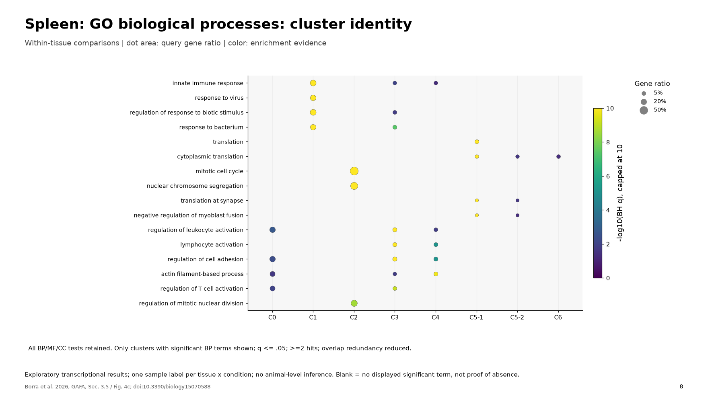
Borra et al. 2026, GAFA, Sec. 3.5 / Fig. 4c; doi:10.3390/biology15070588
GO气泡图只展示显著且至少两个命中基因的代表条目。T2/ Ctrl列分别表示该方向上调基因的富集，不把富集直接解释成通路激活。完整BP、MF、CC结果见数据表。
Copy-ready source panels
Numeric source tables
18. Thymus: GO biological processes: cluster identity
Main talk · source new_09 · 2 independent panels · 0 native tables
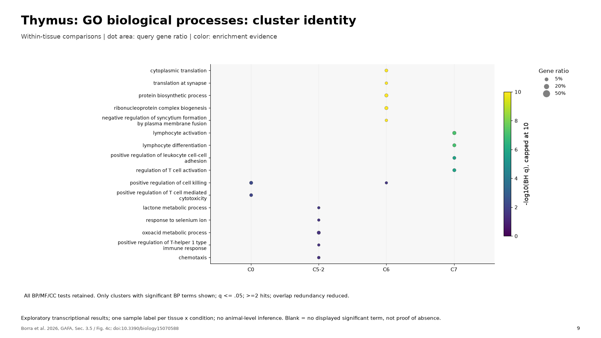
Borra et al. 2026, GAFA, Sec. 3.5 / Fig. 4c; doi:10.3390/biology15070588
GO气泡图只展示显著且至少两个命中基因的代表条目。T2/ Ctrl列分别表示该方向上调基因的富集，不把富集直接解释成通路激活。完整BP、MF、CC结果见数据表。
Copy-ready source panels
Numeric source tables
19. Bone marrow: GO biological processes: condition response
Main talk · source new_10 · 2 independent panels · 0 native tables
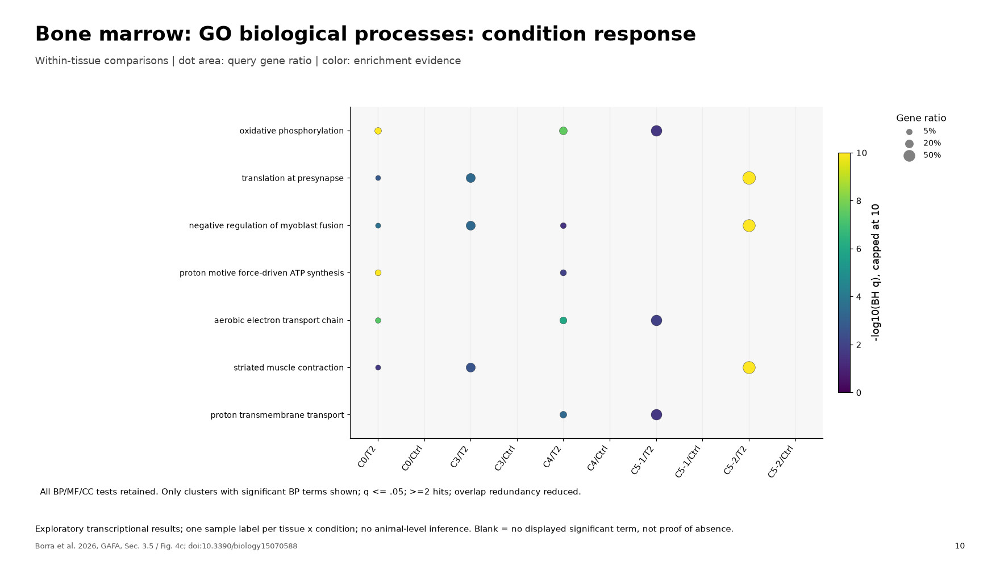
Borra et al. 2026, GAFA, Sec. 3.5 / Fig. 4c; doi:10.3390/biology15070588
GO气泡图只展示显著且至少两个命中基因的代表条目。T2/ Ctrl列分别表示该方向上调基因的富集，不把富集直接解释成通路激活。完整BP、MF、CC结果见数据表。
Copy-ready source panels
Numeric source tables
20. Spleen: GO biological processes: condition response
Main talk · source new_11 · 2 independent panels · 0 native tables
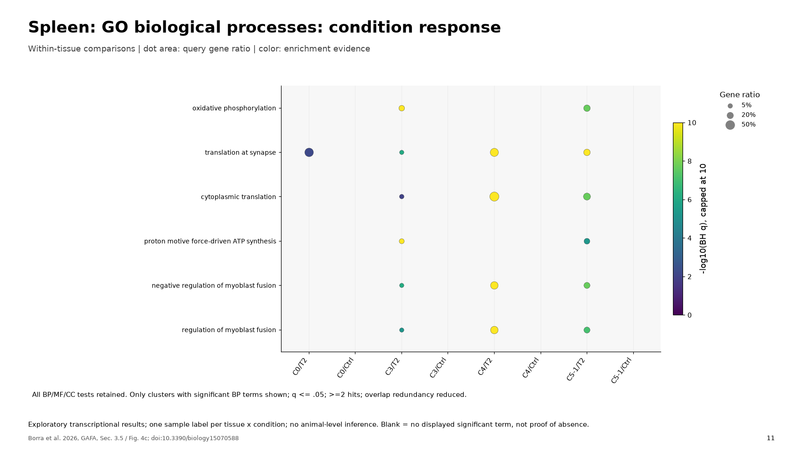
Borra et al. 2026, GAFA, Sec. 3.5 / Fig. 4c; doi:10.3390/biology15070588
GO气泡图只展示显著且至少两个命中基因的代表条目。T2/ Ctrl列分别表示该方向上调基因的富集，不把富集直接解释成通路激活。完整BP、MF、CC结果见数据表。
Copy-ready source panels
Numeric source tables
21. Thymus: GO biological processes: condition response
Main talk · source new_12 · 2 independent panels · 0 native tables
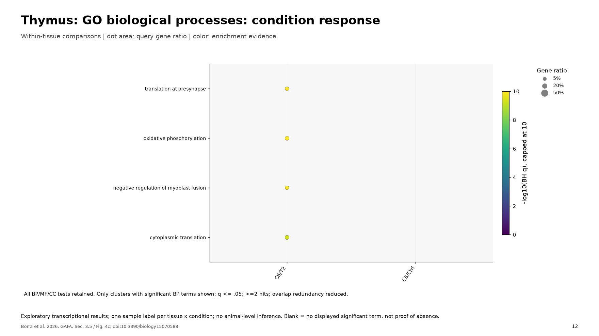
Borra et al. 2026, GAFA, Sec. 3.5 / Fig. 4c; doi:10.3390/biology15070588
GO气泡图只展示显著且至少两个命中基因的代表条目。T2/ Ctrl列分别表示该方向上调基因的富集，不把富集直接解释成通路激活。完整BP、MF、CC结果见数据表。
Copy-ready source panels
Numeric source tables
22. Cellular components of cytotoxic module genes
Main talk · source new_17 · 1 independent panels · 0 native tables
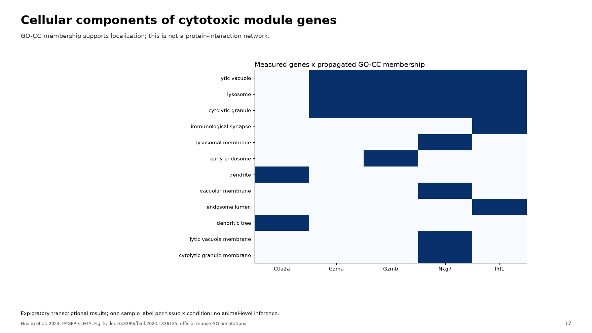
Huang et al. 2024, PAGER-scFGA, Fig. 5; doi:10.3389/fbinf.2024.1336135; official mouse GO annotations
这里只画真实GO细胞组分注释矩阵，不把共同定位误画为PPI相互作用。
Copy-ready source panels
Numeric source tables
23. Bone marrow: local cytotoxicity along pseudotime
Main talk · source new_13 · 3 independent panels · 0 native tables
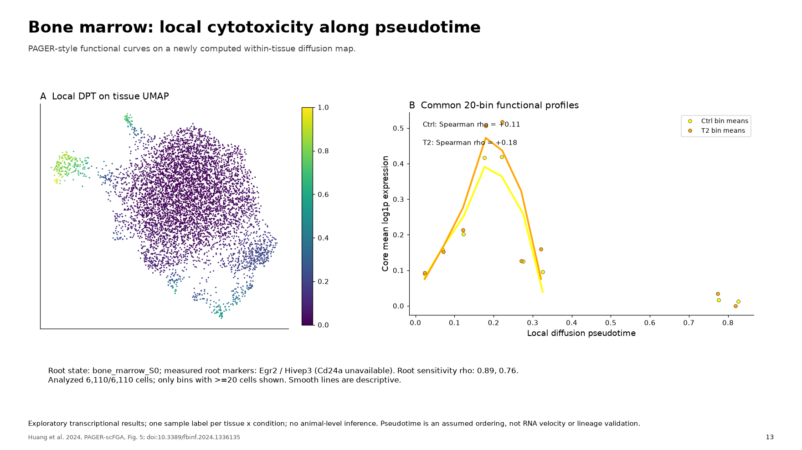
Huang et al. 2024, PAGER-scFGA, Fig. 5; doi:10.3389/fbinf.2024.1336135
重新计算了组织内diffusion map，避免复用全局轨迹。用前体marker选择根群，三个根细胞做敏感性。平滑曲线不是置信区间，条件曲线差别不等于分化速率差别。
Copy-ready source panels
Numeric source tables
24. Spleen: local cytotoxicity along pseudotime
Main talk · source new_14 · 3 independent panels · 0 native tables
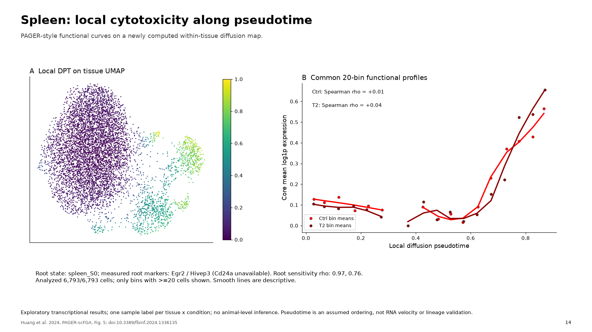
Huang et al. 2024, PAGER-scFGA, Fig. 5; doi:10.3389/fbinf.2024.1336135
重新计算了组织内diffusion map，避免复用全局轨迹。用前体marker选择根群，三个根细胞做敏感性。平滑曲线不是置信区间，条件曲线差别不等于分化速率差别。
Copy-ready source panels
Numeric source tables
25. Thymus: local cytotoxicity along pseudotime
Main talk · source new_15 · 3 independent panels · 0 native tables
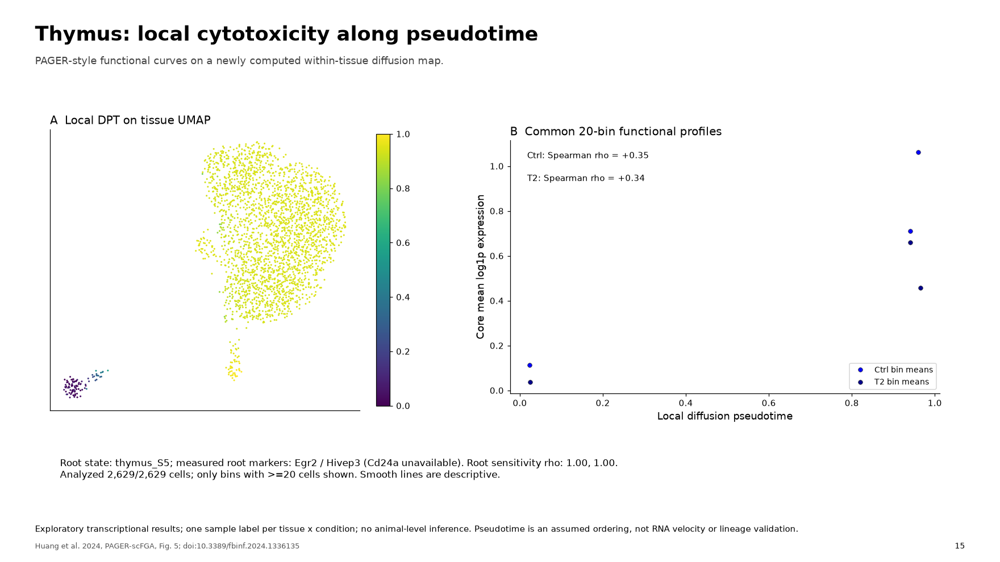
Huang et al. 2024, PAGER-scFGA, Fig. 5; doi:10.3389/fbinf.2024.1336135
重新计算了组织内diffusion map，避免复用全局轨迹。用前体marker选择根群，三个根细胞做敏感性。平滑曲线不是置信区间，条件曲线差别不等于分化速率差别。
Copy-ready source panels
Numeric source tables
26. Robustness: QC matching and alternative clustering
Main talk · source new_18 · 1 independent panels · 0 native tables
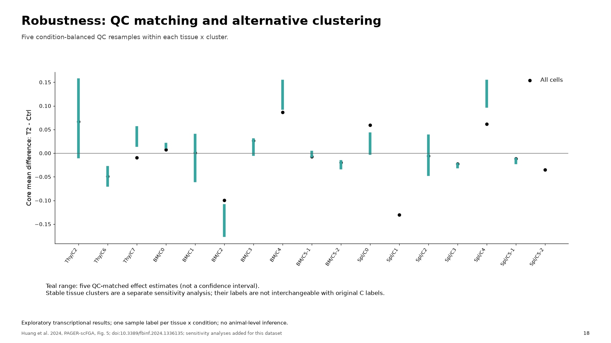
Huang et al. 2024, PAGER-scFGA, Fig. 5; doi:10.3389/fbinf.2024.1336135; sensitivity analyses added for this dataset
绿色范围表示五次QC匹配结果范围，不是置信区间。完整稳定分群分析保存在表里，不把S群直接等同原来的C群。
Copy-ready source panels
Numeric source tables
27. Core signature changes do not imply a full killing pathway
Main talk · source new_16 · 2 independent panels · 0 native tables
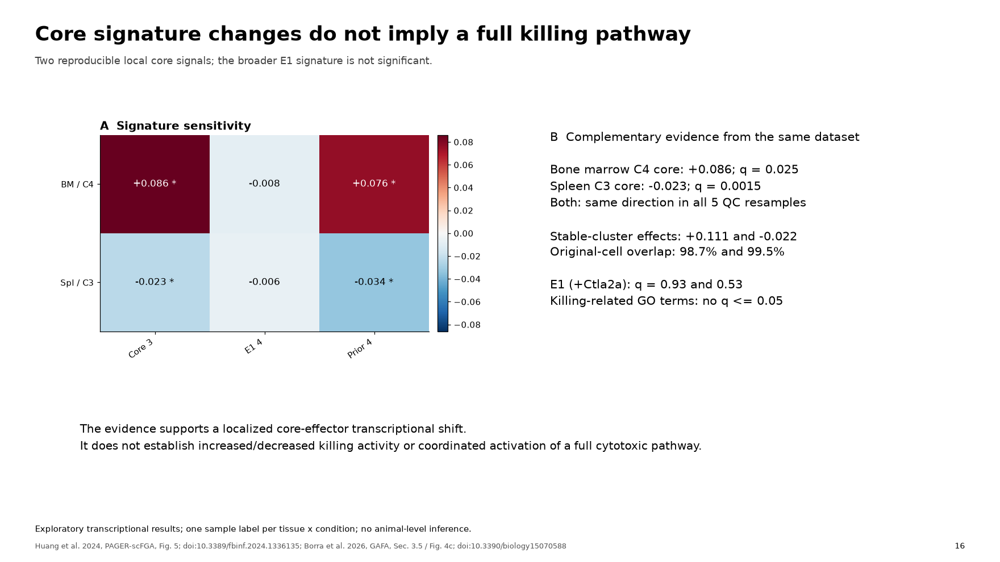
Huang et al. 2024, PAGER-scFGA, Fig. 5; doi:10.3389/fbinf.2024.1336135; Borra et al. 2026, GAFA, Sec. 3.5 / Fig. 4c; doi:10.3390/biology15070588
骨髓C4和脾脏C3的核心3基因模块及原4基因效应模块有一致局部变化；加入Ctla2a后的论文E1代表模块不显著。杀伤相关GO也未显著，不能推断整个细胞毒性通路增强或减弱。
Copy-ready source panels
Numeric source tables
28. Interpretation: localized effector changes with shared metabolic signals
Main talk · source custom_02 · 0 independent panels · 1 native tables
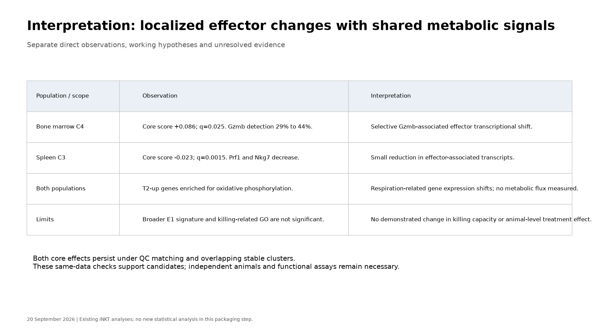
20260919 numeric results; gene-level follow-up reviewed 20260919
骨髓C4主要是Gzmb相关变化；脾脏C3效应较小。两群均有氧化磷酸化基因富集，但细胞毒性分数方向不同。扩展E1与杀伤GO不显著，因此限制在转录状态变化。
Copy-ready source panels
- Text/table slide: edit directly in PPTX.
Numeric source tables
29. iNKT: results in the reference presentation formats
Appendix · source old_01 · 0 independent panels · 1 native tables
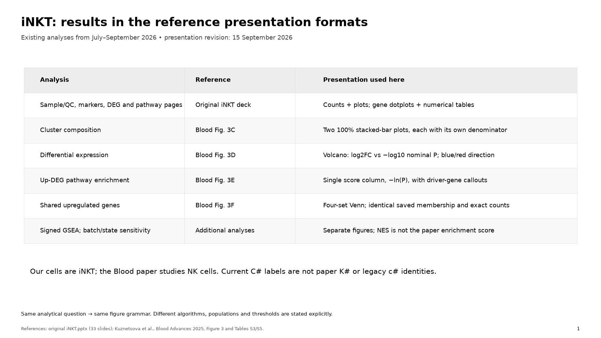
References: original iNKT.pptx (33 slides); Kuznetsova et al., Blood Advances 2025, Figure 3 and Tables S3/S5.
原综合报告第1页。Same analytical question → same figure grammar. Different algorithms, populations and thresholds are stated explicitly.
Copy-ready source panels
- Text/table slide: edit directly in PPTX.
Numeric source tables
30. UMAP: 50, 100 and 200 principal components
Appendix · source old_04 · 1 independent panels · 0 native tables
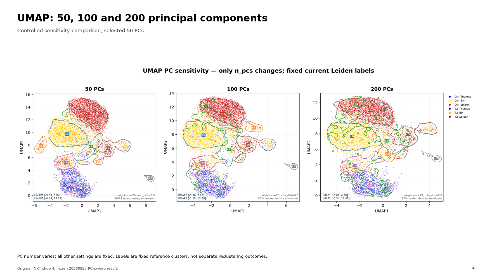
Original iNKT slide 4; frozen 20260825 PC-sweep result.
原综合报告第4页。PC number varies; all other settings are fixed. Labels are fixed reference clusters, not separate reclustering outcomes.
Copy-ready source panels
Numeric source tables
- See notes/numeric_source_mapping.json and original source reference.
31. T2 vs. Control DEGs: global
Appendix · source old_11 · 3 independent panels · 1 native tables
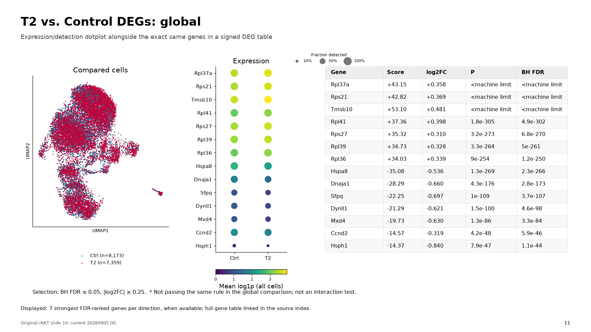
Original iNKT slide 10; current 20260905 DE.
原综合报告第11页。Displayed: 7 strongest FDR-ranked genes per direction, when available; full gene table linked in the source index.
Copy-ready source panels
Numeric source tables
32. T2 vs. Control DEGs: BM
Appendix · source old_12 · 3 independent panels · 1 native tables
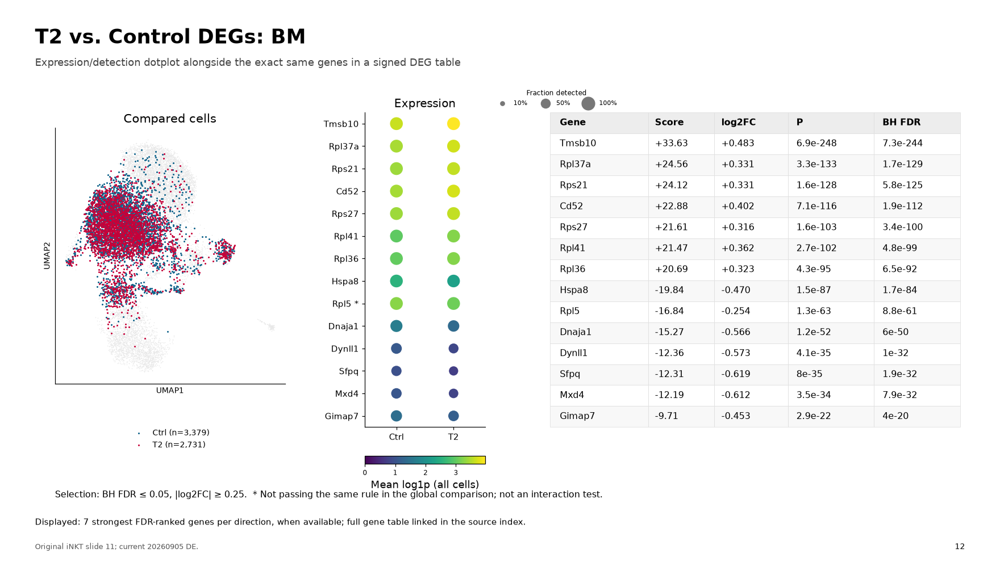
Original iNKT slide 11; current 20260905 DE.
原综合报告第12页。Displayed: 7 strongest FDR-ranked genes per direction, when available; full gene table linked in the source index.
Copy-ready source panels
Numeric source tables
33. T2 vs. Control DEGs: Spl
Appendix · source old_13 · 3 independent panels · 1 native tables
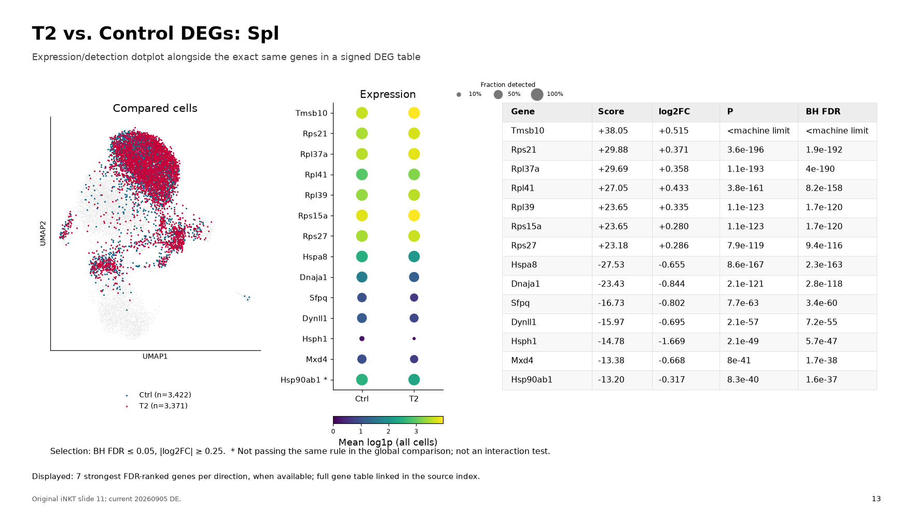
Original iNKT slide 11; current 20260905 DE.
原综合报告第13页。Displayed: 7 strongest FDR-ranked genes per direction, when available; full gene table linked in the source index.
Copy-ready source panels
Numeric source tables
34. T2 vs. Control DEGs: Thy
Appendix · source old_14 · 3 independent panels · 1 native tables
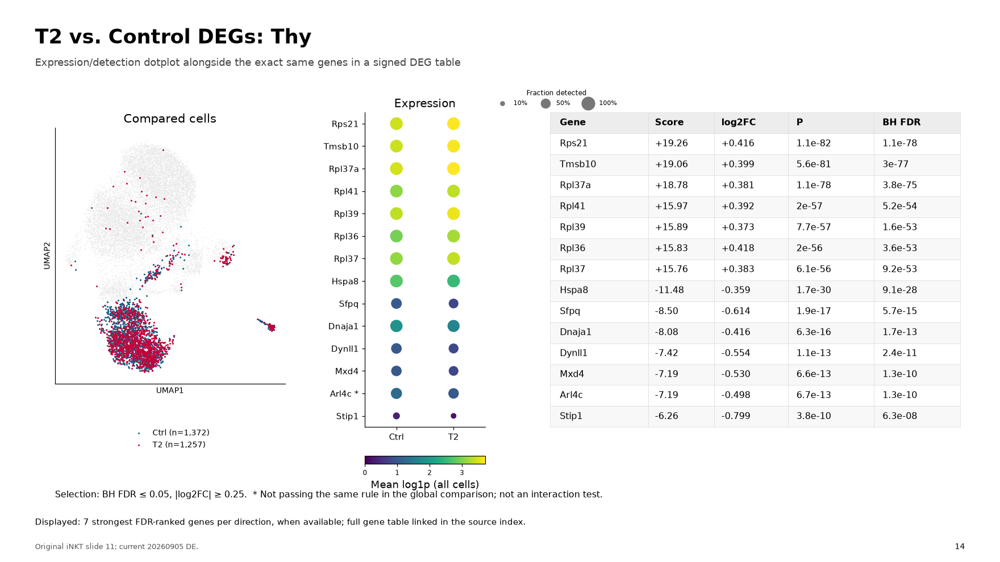
Original iNKT slide 11; current 20260905 DE.
原综合报告第14页。Displayed: 7 strongest FDR-ranked genes per direction, when available; full gene table linked in the source index.
Copy-ready source panels
Numeric source tables
35. T2 vs. Control DEGs: C0 / BM
Appendix · source old_15 · 3 independent panels · 1 native tables
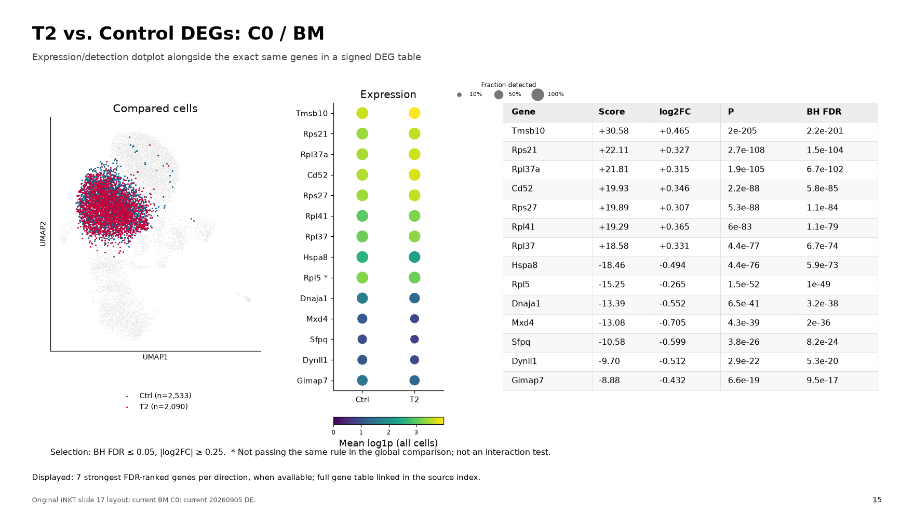
Original iNKT slide 17 layout; current BM C0; current 20260905 DE.
原综合报告第15页。Displayed: 7 strongest FDR-ranked genes per direction, when available; full gene table linked in the source index.
Copy-ready source panels
Numeric source tables
36. T2 vs. Control DEGs: C6 / Thy
Appendix · source old_16 · 3 independent panels · 1 native tables
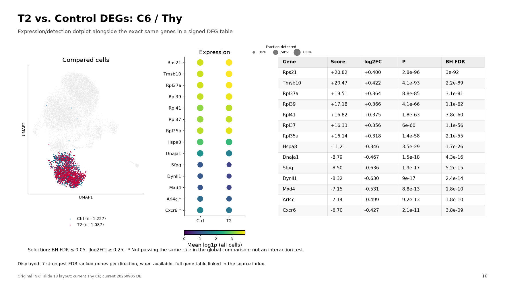
Original iNKT slide 13 layout; current Thy C6; current 20260905 DE.
原综合报告第16页。Displayed: 7 strongest FDR-ranked genes per direction, when available; full gene table linked in the source index.
Copy-ready source panels
Numeric source tables
37. T2 vs. Control DEGs: C5-1 / Spl
Appendix · source old_17 · 3 independent panels · 1 native tables
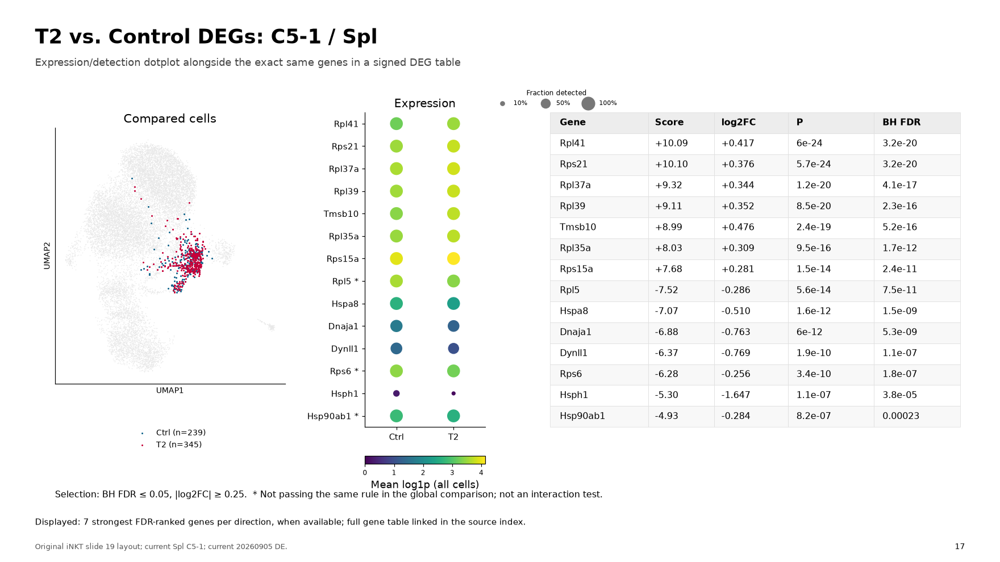
Original iNKT slide 19 layout; current Spl C5-1; current 20260905 DE.
原综合报告第17页。Displayed: 7 strongest FDR-ranked genes per direction, when available; full gene table linked in the source index.
Copy-ready source panels
Numeric source tables
38. T2 vs. Control DEGs: C5-2 / BM
Appendix · source old_18 · 3 independent panels · 1 native tables
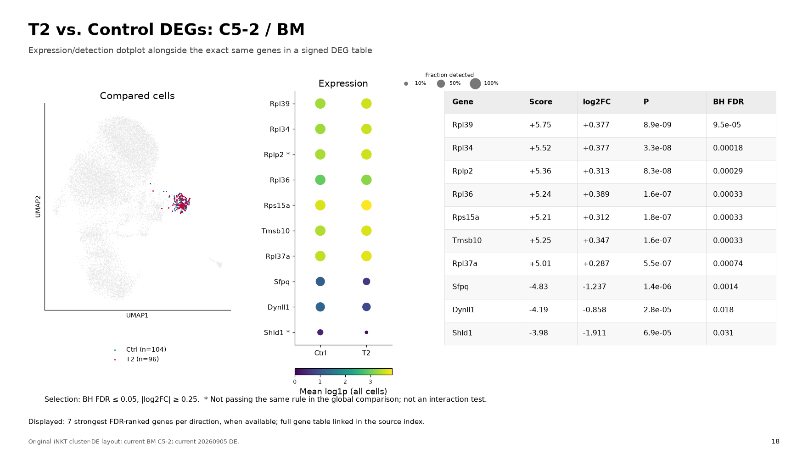
Original iNKT cluster-DE layout; current BM C5-2; current 20260905 DE.
原综合报告第18页。Displayed: 7 strongest FDR-ranked genes per direction, when available; full gene table linked in the source index.
Copy-ready source panels
Numeric source tables
39. Pathways: C6 / Thy
Appendix · source old_19 · 0 independent panels · 1 native tables
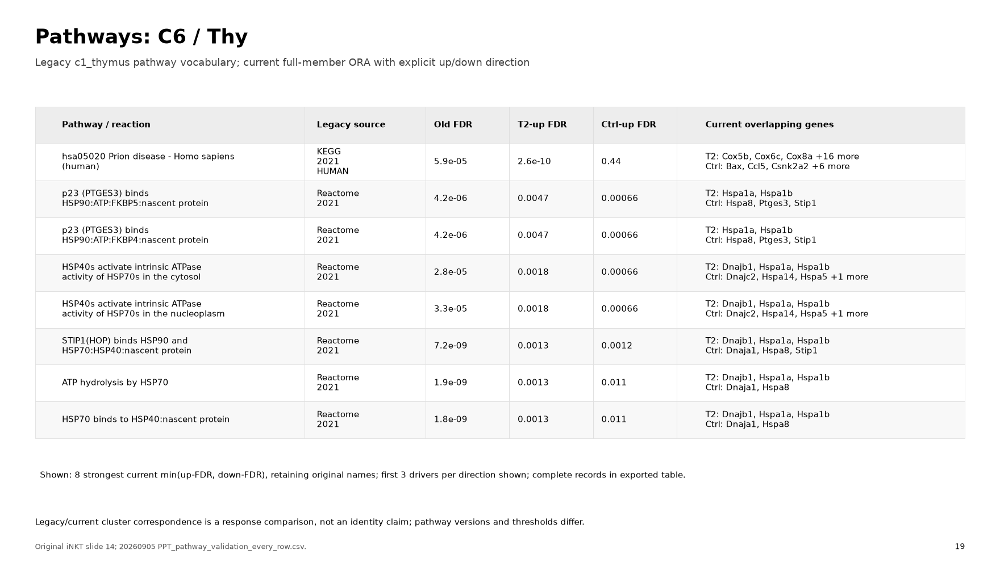
Original iNKT slide 14; 20260905 PPT_pathway_validation_every_row.csv.
原综合报告第19页。Legacy/current cluster correspondence is a response comparison, not an identity claim; pathway versions and thresholds differ.
Copy-ready source panels
- Text/table slide: edit directly in PPTX.
Numeric source tables
40. Pathways: C0 / BM
Appendix · source old_20 · 0 independent panels · 1 native tables
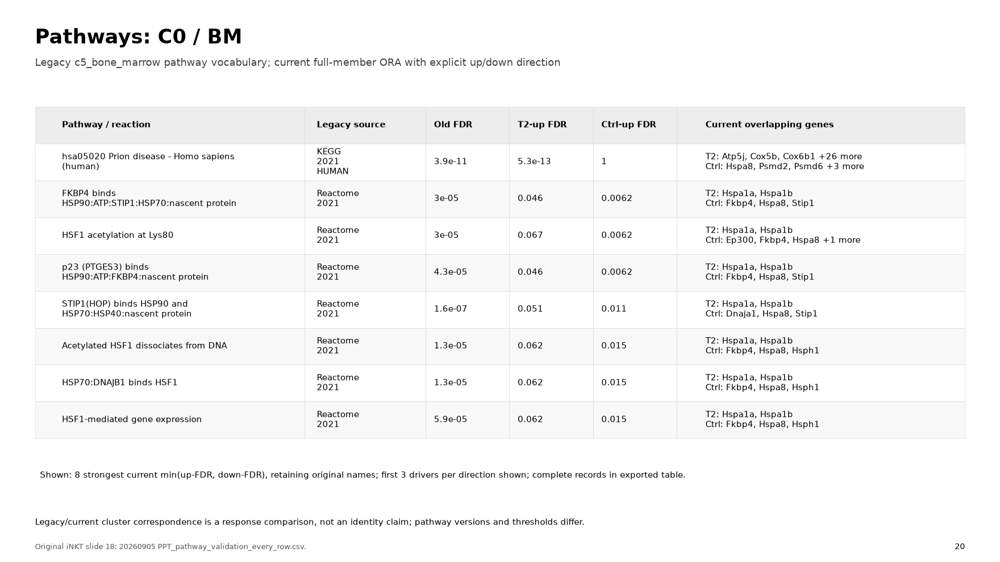
Original iNKT slide 18; 20260905 PPT_pathway_validation_every_row.csv.
原综合报告第20页。Legacy/current cluster correspondence is a response comparison, not an identity claim; pathway versions and thresholds differ.
Copy-ready source panels
- Text/table slide: edit directly in PPTX.
Numeric source tables
41. Pathways: C5-1 / Spl
Appendix · source old_21 · 0 independent panels · 1 native tables
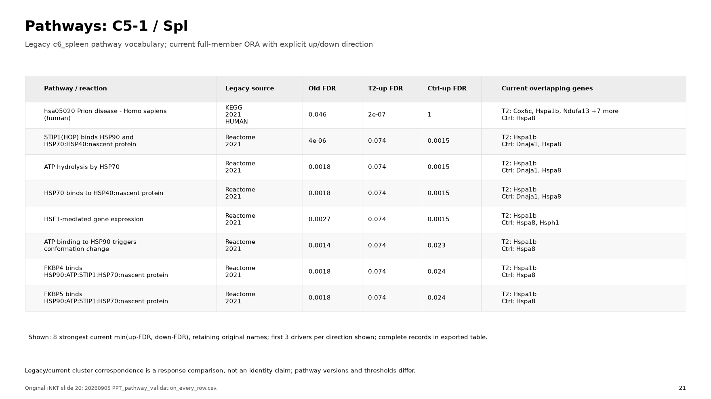
Original iNKT slide 20; 20260905 PPT_pathway_validation_every_row.csv.
原综合报告第21页。Legacy/current cluster correspondence is a response comparison, not an identity claim; pathway versions and thresholds differ.
Copy-ready source panels
- Text/table slide: edit directly in PPTX.
Numeric source tables
42. E Paper pathways: C0 / BM
Appendix · source old_23 · 2 independent panels · 0 native tables
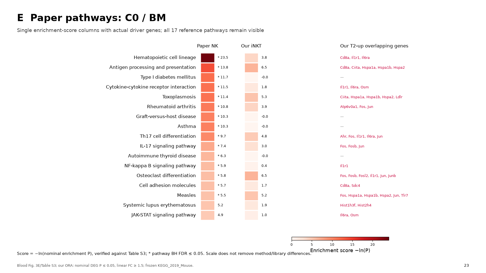
Blood Fig. 3E/Table S3; our ORA: nominal DEG P ≤ 0.05, linear FC ≥ 1.5; frozen KEGG_2019_Mouse.
原综合报告第23页。Score = −ln(nominal enrichment P), verified against Table S3; * pathway BH FDR ≤ 0.05. Scale does not remove method/library differences.
Copy-ready source panels
Numeric source tables
43. E Paper pathways: C5-1 / Spl
Appendix · source old_24 · 2 independent panels · 0 native tables
Blood Fig. 3E/Table S3; our ORA: nominal DEG P ≤ 0.05, linear FC ≥ 1.5; frozen KEGG_2019_Mouse.
原综合报告第24页。Score = −ln(nominal enrichment P), verified against Table S3; * pathway BH FDR ≤ 0.05. Scale does not remove method/library differences.
Copy-ready source panels
Numeric source tables
44. E Paper pathways: C6 / Thy
Appendix · source old_25 · 2 independent panels · 0 native tables
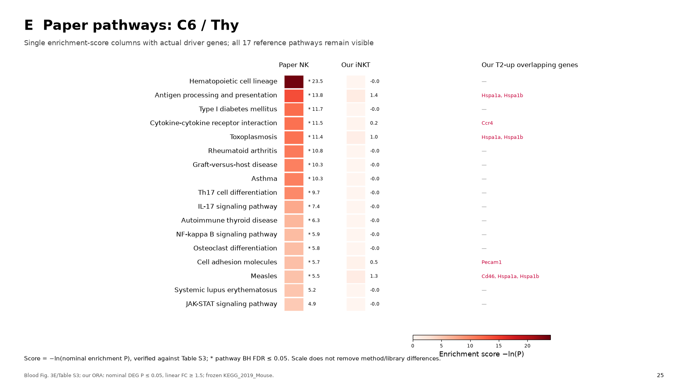
Blood Fig. 3E/Table S3; our ORA: nominal DEG P ≤ 0.05, linear FC ≥ 1.5; frozen KEGG_2019_Mouse.
原综合报告第25页。Score = −ln(nominal enrichment P), verified against Table S3; * pathway BH FDR ≤ 0.05. Scale does not remove method/library differences.
Copy-ready source panels
Numeric source tables
45. E Current top pathways: C0 / BM
Appendix · source old_26 · 1 independent panels · 0 native tables
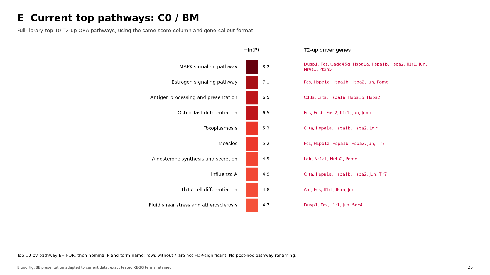
Blood Fig. 3E presentation adapted to current data; exact tested KEGG terms retained.
原综合报告第26页。Top 10 by pathway BH FDR, then nominal P and term name; rows without * are not FDR-significant. No post-hoc pathway renaming.
Copy-ready source panels
Numeric source tables
46. E Current top pathways: C5-1 / Spl
Appendix · source old_27 · 1 independent panels · 0 native tables
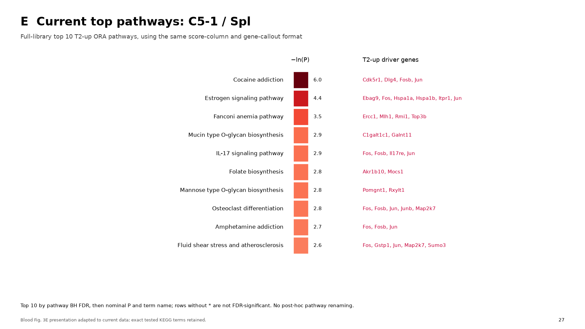
Blood Fig. 3E presentation adapted to current data; exact tested KEGG terms retained.
原综合报告第27页。Top 10 by pathway BH FDR, then nominal P and term name; rows without * are not FDR-significant. No post-hoc pathway renaming.
Copy-ready source panels
Numeric source tables
47. E Current top pathways: C6 / Thy
Appendix · source old_28 · 1 independent panels · 0 native tables
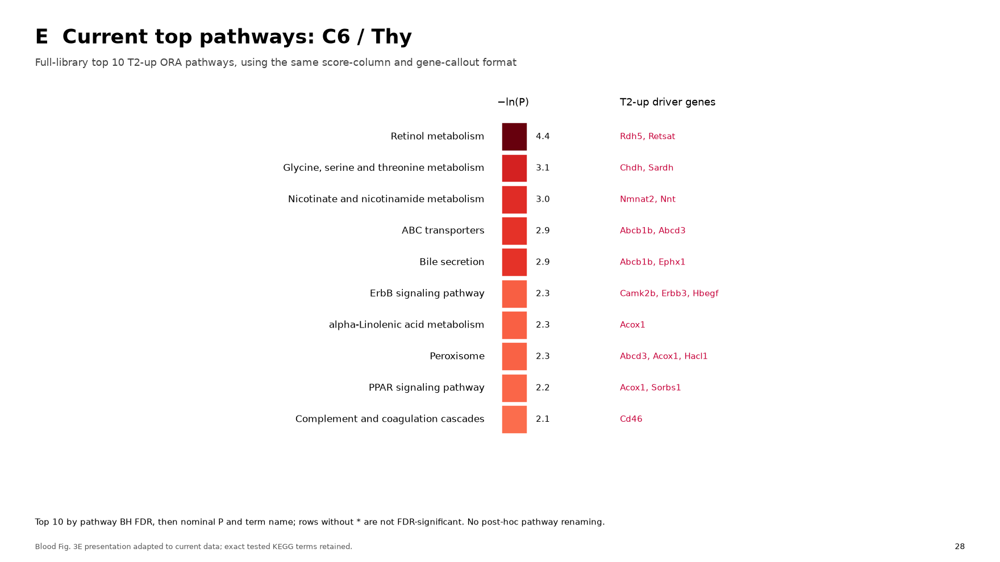
Blood Fig. 3E presentation adapted to current data; exact tested KEGG terms retained.
原综合报告第28页。Top 10 by pathway BH FDR, then nominal P and term name; rows without * are not FDR-significant. No post-hoc pathway renaming.
Copy-ready source panels
Numeric source tables
48. F Shared T2-up genes across state × tissue
Appendix · source old_29 · 2 independent panels · 0 native tables
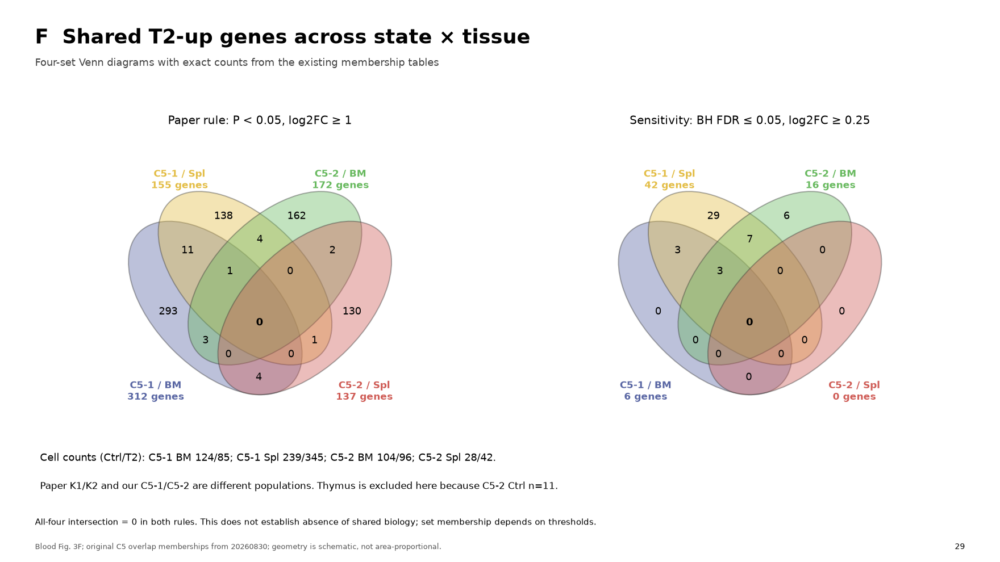
Blood Fig. 3F; original C5 overlap memberships from 20260830; geometry is schematic, not area-proportional.
原综合报告第29页。All-four intersection = 0 in both rules. This does not establish absence of shared biology; set membership depends on thresholds.
Copy-ready source panels
Numeric source tables
49. Batch sensitivity: show the actual UMAPs
Appendix · source old_30 · 3 independent panels · 0 native tables
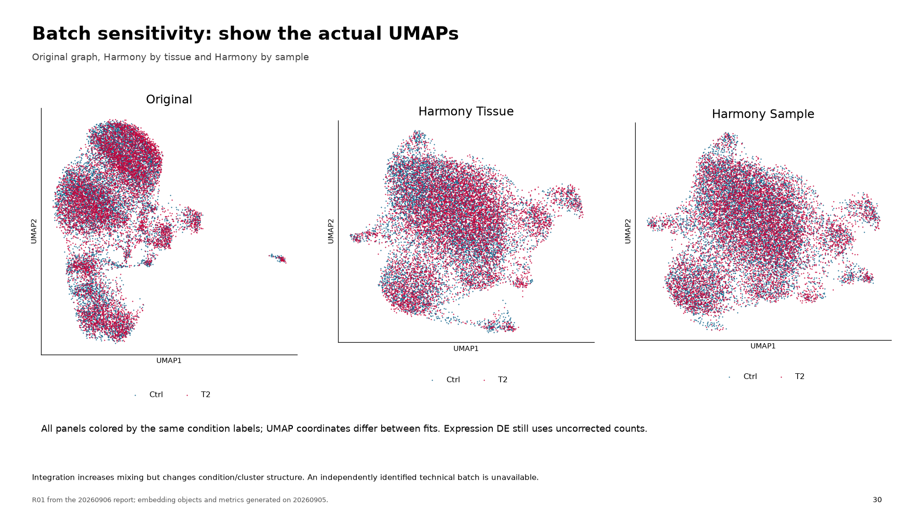
R01 from the 20260906 report; embedding objects and metrics generated on 20260905.
原综合报告第30页。Integration increases mixing but changes condition/cluster structure. An independently identified technical batch is unavailable.
Copy-ready source panels
Numeric source tables
- See notes/numeric_source_mapping.json and original source reference.
50. Additional analysis: signed GSEA and heat-shock sensitivity
Appendix · source old_31 · 1 independent panels · 0 native tables
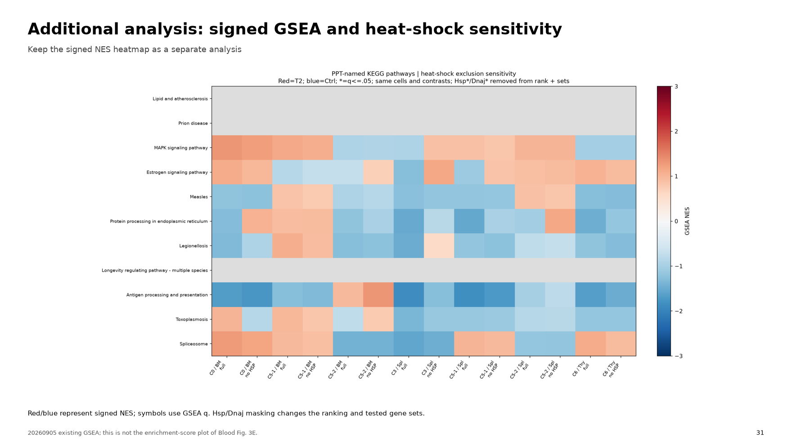
20260905 existing GSEA; this is not the enrichment-score plot of Blood Fig. 3E.
原综合报告第31页。Red/blue represent signed NES; symbols use GSEA q. Hsp/Dnaj masking changes the ranking and tested gene sets.
Copy-ready source panels
Numeric source tables
- See notes/numeric_source_mapping.json and original source reference.
51. Additional analysis: reference NK state coverage
Appendix · source old_32 · 1 independent panels · 0 native tables
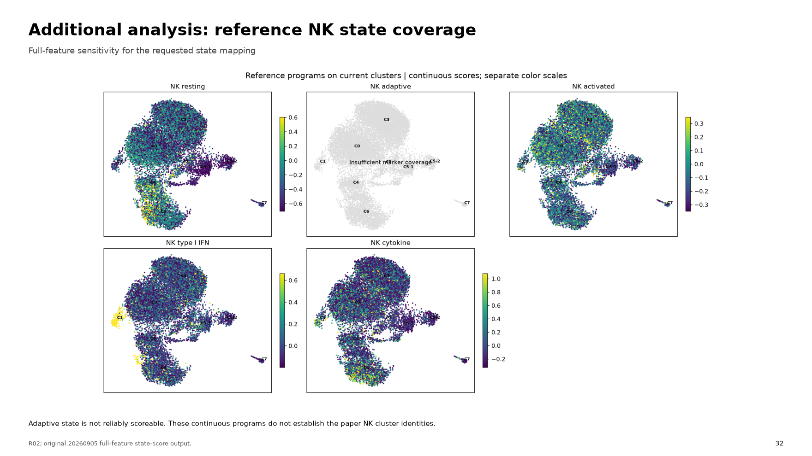
R02; original 20260905 full-feature state-score output.
原综合报告第32页。Adaptive state is not reliably scoreable. These continuous programs do not establish the paper NK cluster identities.
Copy-ready source panels
Numeric source tables
- See notes/numeric_source_mapping.json and original source reference.
52. Additional analysis: bone marrow separately
Appendix · source old_33 · 1 independent panels · 0 native tables
R03; 20260905 stability-selected bone marrow output.
原综合报告第33页。New within-tissue labels differ from original C# labels; use saved cell-overlap tables for correspondence.
Copy-ready source panels
Numeric source tables
- See notes/numeric_source_mapping.json and original source reference.
53. IL-4 and CD94: condition-masked expression
Appendix · source old_34 · 1 independent panels · 0 native tables
20260830 condition-mask output; marker display requested in the earlier meeting.
原综合报告第34页。Complementarity is weak, not strict exclusivity. UMAP positions are not physical tissue locations or RNA velocity.
Copy-ready source panels
Numeric source tables
- See notes/numeric_source_mapping.json and original source reference.
54. Local information: bone marrow C4
Appendix · source old_35 · 1 independent panels · 0 native tables
R13; 20260905 discovery results; relates to the local-vs-global question in original iNKT slides 27–28.
原综合报告第35页。Same-data sensitivity checks support a candidate, not an independent replicate or established mechanism.
Copy-ready source panels
Numeric source tables
- See notes/numeric_source_mapping.json and original source reference.
55. Local information: spleen C3 CCT/TriC program
Appendix · source old_36 · 1 independent panels · 0 native tables
R13; 20260905 discovery output.
原综合报告第36页。Shared driver genes link several pathway names. Expression evidence does not directly measure protein-folding or killing function.
Copy-ready source panels
Numeric source tables
- See notes/numeric_source_mapping.json and original source reference.
56. What is comparable, and what remains different
Appendix · source old_37 · 0 independent panels · 1 native tables
Original iNKT deck and Blood main/supplementary figures reviewed; see presentation_audit.md for the full mapping.
原综合报告第37页。Current priority: BM C4 expression-state candidates and Spl C3 CCT/TriC-related expression; independent validation remains pending.
Copy-ready source panels
- Text/table slide: edit directly in PPTX.
Numeric source tables
57. iNKT cytotoxicity and Gene Ontology
Appendix · source new_01 · 1 independent panels · 0 native tables
Huang et al. 2024, PAGER-scFGA, Fig. 5; doi:10.3389/fbinf.2024.1336135; Borra et al. 2026, GAFA, Sec. 3.5 / Fig. 4c; doi:10.3390/biology15070588
本轮新增的是细胞毒性与GO计算。输入来自9月5日最新分析对象；9月15日仅是展示更新。
Copy-ready source panels
Numeric source tables
58. Evidence summary and next interpretation
Appendix · source new_19 · 0 independent panels · 1 native tables
Huang et al. 2024, PAGER-scFGA, Fig. 5; doi:10.3389/fbinf.2024.1336135; Borra et al. 2026, GAFA, Sec. 3.5 / Fig. 4c; doi:10.3390/biology15070588
总结按表达差异绝对值排序。优先看基因组成、QC匹配、背景校正评分是否同向，再讨论GO机制；不要把转录结果写成已验证杀伤增强或减弱。
Copy-ready source panels
- Text/table slide: edit directly in PPTX.
Numeric source tables